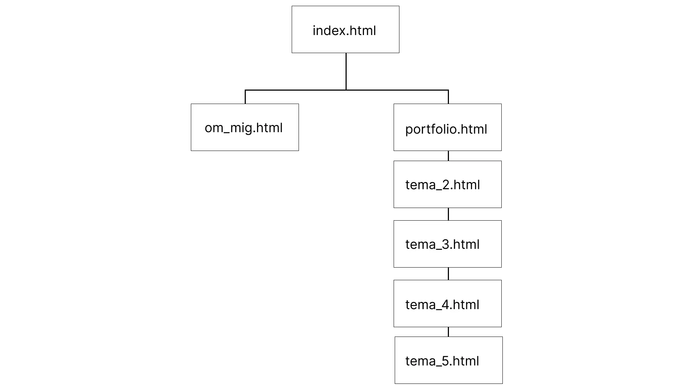

Project overview
The exam in the 1st semester consists of an individual portfolio website assignment, followed by an individual oral exam.
It is not a professional portfolio, but a school portfolio, which presents the projects I have worked on during the semester. The site's visual expression is based on conventions and design principles and reflects me as the sender.
My role
→ Reserach
→ UX / UI Design
→ Coding
The Design process
Sitemap
I started my process with the exam assignment by brainstorming a bit on the different themes we had during the semester and what content I wanted to include on my site. I then created a sitemap as the very first thing. This was to quickly get an overview of how I wanted my site set up and to make sure the final site would be simple and easy to navigate.
Moodboard & Styletile
I then created my moodboard and my styletile. Right from the start of the project, I knew I wanted a simple and clean site. I knew I wanted to use a lot of natural colors like beige, light gray and dark gray. Here I also used both the Adobe color wheel and coolors to find colors that went well together.
Laying out my content
After creating my moodboard and styletile, I had a clear idea of how my header and footer should look + my burgermenu. On my front page, portfolio and about me page I also had a clear idea of the layout. The theme pages did however change a bit throughout my process. Once the layout was identified in a way that prioritized important content and created a user friendly experience, I dove in to high fidelity designs to focus on the visuals.


The final result
Here is the final look of the pages after adding all visual elements and designs.
For my exam i had an oral presentation and based on both my website and the oral exam i got a 10 for my grade - which is equal to an A on the american grading scale.